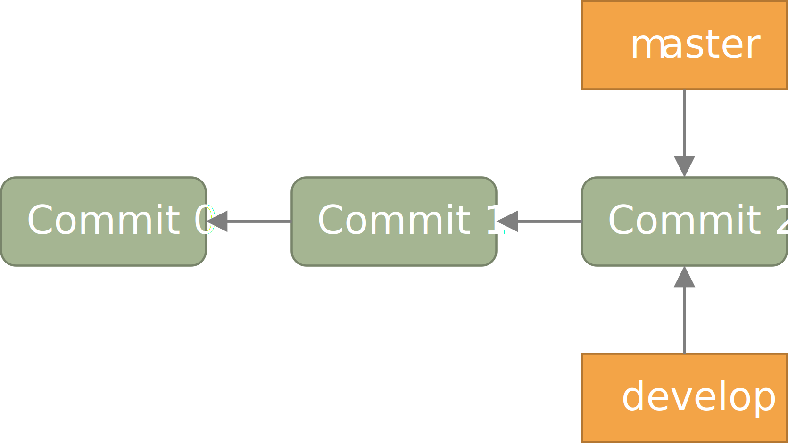
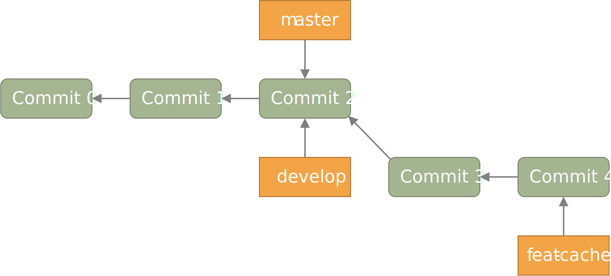
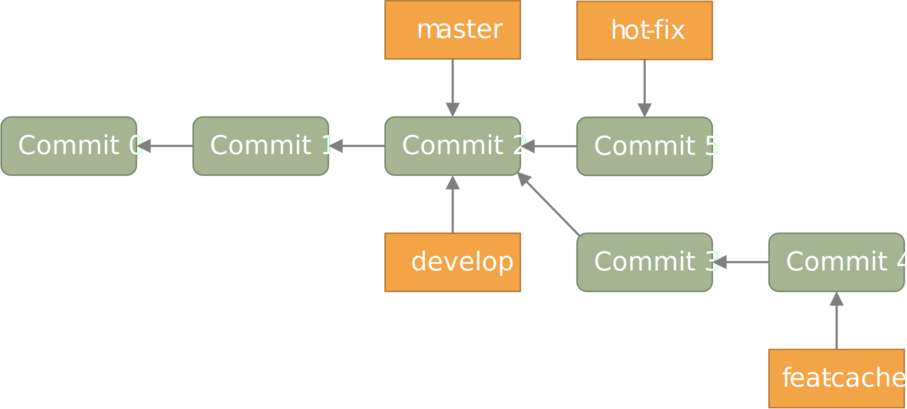
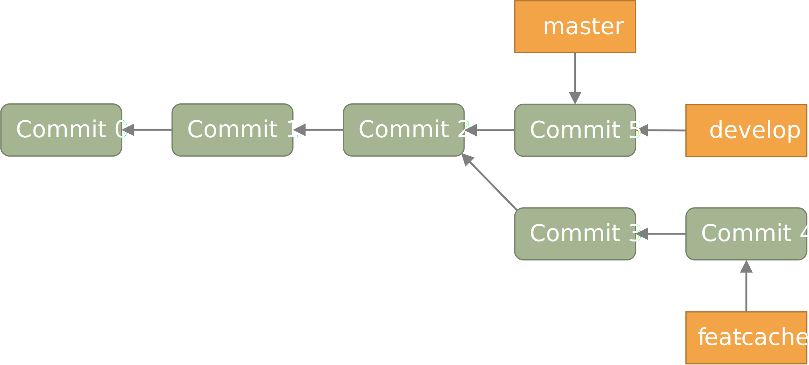
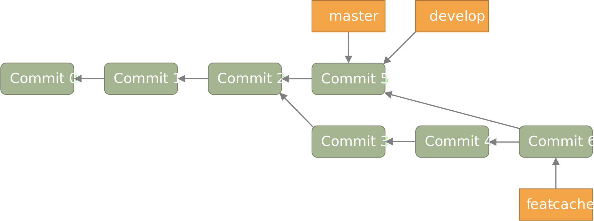
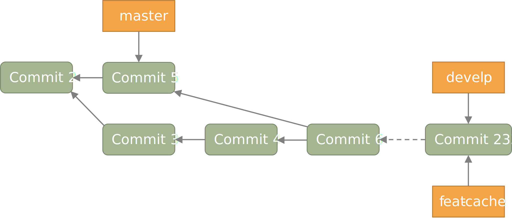

开发流程和规范
在创建一个git项目时, 默认会得到一个 master 分支. 如果 master 分支已经被发布, 但我们又需 要开发新的功能, 那么此时并不方便在 master 分支上直接进行修改.
一个比较好的策略是:
- 创建一个 develop 分支作为开发主线. 开发时以 develop 分支为基础, 新建临时分支. 在临时分支上开发完毕后, 再合并回 develop 分支.
- 当 develop 分支经过充分的测试和验证后, 再将 develop 分支合并回 master 分支.
为了更好地说明开发流程, 我们来看一个简单的例子.
一个例子
假设此时你正在写一个 CPU, 现在你的仓库如下图的初始状态所示, 已经有了三个提交, 并且目前
master 分支和 develop 分支均位于 Commit 2 提交上. 你现在位于 develop 分支上.

新增功能
现在, 你需要为你的 CPU 添加 cache. 为了开发这一新功能, 你选择新建并切换到一个名为
feat-cache 的分支:
$ git checkout -b feat-cache
Switched to a new branch "feat-cache"
在经历了一段时间的开发后, 你在 feat-cache 分支上已经有了一些提交, 并且有一些未提交的更改.
此时仓库如下图所示.

突发需求
就在这时, 不幸的事情发生了: X老师微信私戳你说 master 上有一个 bug, 这个 bug
会让你的 CPU 在执行 fence 指令的时候出现错误. 这个 bug 十分严重, 需要你立刻修复!
你一拍脑袋, 啊, 原来你当初忘记实现这个指令了! 为了修复这个 bug, 你在将当前手头的工作放下, 将工作区压入栈中:
$ git stash
Saved working directory and index state WIP on feat-cache: af95720 <your message>
然后, 你在 develop 分支上 checkout 了一个名为 hot-fix 的本地分支来修复这个 bug:
$ git checkout develop
Switched to branch 'develop'
Your branch is up to date with 'origin/develop'.
$ git checkout -b hot-fix
Switched to a new branch 'hot-fix'
并在这个分支上进行紧急修复. 由于目前你的 CPU 还只是一个顺序 CPU, 因此只需要将 fence
指令解析为 nop 即可. 确定了修复的方案, 你于是三下五除二地修好了这个 bug.
测试无误后, 你暂存并提交了你的修改:
$ git add .
$ git commit -m "fix: `fence` not implemented"
[hotfix 1a80fb7] fix: `fence` not implemented
2 file changed, 7 insertions(+)
这时, 你的仓库如下图所示.

时间就是金钱. 你将 hot-fix 分支合并进 develop 分支, 并将本地分支提交到远程仓库:
$ git checkout develop
Switched to branch 'develop'
Your branch is up to date with 'origin/develop'.
$ git merge hot-fix
Updating 7ae3f90..1a80fb7
Fast-forward
decode.scala | 4 ++++
RVI.scala | 3 +++
2 file changed, 7 insertions(+)
$ git push
Counting objects: 7, done.
Delta compression using up to 12 threads.
Compressing objects: 100% (3/3), done.
Writing objects: 100% (3/3), 2.33 KiB | 0 bytes/s, done.
Total 3 (delta 2), reused 0 (delta 0)
To https://github.com/yourname/yourcpu
7ae3f90..1a80fb7 develop -> develop
updating local tracking ref 'refs/remotes/origin/develop'
为了让用户获得这个修复, 你将 develop 分支合并到 master 分支, 并将其推送到远程仓库:
$ git checkout master
Switched to branch 'master'
Your branch is up to date with 'origin/master'.
$ git merge develop
Updating 7ae3f90..1a80fb7
Fast-forward
decode.scala | 4 ++++
RVI.scala | 3 +++
2 file changed, 7 insertions(+)
$ git push
Total 0 (delta 0), reused 0 (delta 0)
To https://github.com/yourname/yourcpu
7ae3f90..1a80fb7 master -> master
updating local tracking ref 'refs/remotes/origin/master'
呼! 你长舒一口气, 这个 bug 修好了, 你可以继续回到你的 feat-cache 分支上工作了.
哦对了, 既然 bug 修复好了, 那么 hot-fix 分支也完成了它的使命, 是时候删除它了:
$ git branch -d hot-fix
Deleted branch hot-fix (was 1a80fb7).
这时候, 你的仓库如下图所示.

合并修补
你发现, 这个 bug 虽然在 master 和 develop 分支中被修复了, 但 feat-cache
分支却仍然是有 bug 的版本! 因此, 你需要先将 develop 分支并入 feat-cache 分支,
然后再进行下一步工作:
$ git checkout feat-cache
Switched to branch 'feat-cache'
$ git merge develop
Merge made by the 'recursive' strategy.
decode.scala | 4 ++++
RVI.scala | 3 +++
2 file changed, 7 insertions(+)
等等, 这和之前的合并好像有些不太一样? 原来, 此时要合并的两个分支 develop 和 feat-cache
在 Commit 2 处发生了分岔, develop 不再是 feat-cache 的直接历史了. 在这种情况下, git
会做一些额外的工作: 根据 develop 指向的提交 Commit 5, feat-cache 指向的提交
Commit 4 和产生分岔的提交 Commit 2 这三个提交生成一个新的合并提交
Commit 6, 如下图所示.

你嘬了一口咖啡, 心想: 终于可以继续写 cache 了.
完成开发
在经历了一段时间的敏捷开发后, 你成功地完成了 cache 的开发, 于是你心怀激动地输入:
$ git commit -m "feat: cache implemented and involved by default"
在经过仔细验证后, 你觉得应该没有什么 bug 了, 于是你决定将其并入 develop 分支:
$ git checkout develop
$ git merge feat-cache
经历了上一次紧急修补 bug 的教训, 你想了想, 稳妥起见, 还是先不把 develop
分支并入 master 分支, 等经过更多人和更充分的测试后再说吧. 这时,
你的仓库应当如下图所示.

开发规范
看完上述例子过后, 我们可以总结出这样的开发规范:
分支规范
- master 分支一般为发布分支, 其应当能够正常工作, 且经过充分的评估和测试. 一般不会在该分支上开发.
- develop 分支为开发分支, 其应当能够工作. 所有的开发工作都应该基于它, 但一般不会直接在该分支上开发.
- 开发时应该基于 develop 分支新建一个开发分支, 其命名应当遵循一定的约定且有意义,
如
fix-23,feat-pipeline等. - 开发过程中应该经常同步本地的 develop 分支, 并将其合并入开发分支.
- 开发结束后, 将开发分支并入 develop 分支, 并将开发分支删除.
- 在经过充分评估和测试后, 才可以将 develop 分支并入 master 分支.
提交信息规范
提交信息只能有 header, body, footer 三部分组成, 每部分间用空行分隔,
body 和 footer 是可选的:
<header>
[body]
[footer]
header
header 只有一行，包括 type, scope 和 subject 三个字段，其中 scope 为可选项:
<type>[scope]: <description>
type: 用于说明 commit 类型，一般分为以下几种:- build: 与构建流程等有关的改动
- feat: 新增 feature
- fix: 修复 bug
- chore: 日常维护
- test: 增加测试或修改已有测试
- refactor: 不改变行为的, 对代码结构的改动
- style: 对代码风格的改动 (仅限缩进, 空行一类的简单改动)
- cosm: 对界面的纯视觉上的改动
- docs: 对文档和注释的改动
- perf: 与性能相关的改动
- ci: 与 CI 配置文件或脚本有关的改动
scope: 用于说明此次commit影响的范围description: 对代码变更的简短总结
body
可以使用 body 来说明此次修改的动机和修改前后程序的行为差异
footer
如果包含不兼容的修改, 则需要在 footer 部分提及, 以 BREAKING CHANGE 开头,
并写入对修改的描述和迁移方法:
<blank line>
BREAKING CHANGE: <description and migration instructions>
同时, 如果更改涉及类似 GitHub 中的 issues 时, 也可以在 footer 部分提及:
<blank line>
Fixes #<issue number>
提交粒度规范
提交的粒度需要以功能点为单位, 每次实现新功能后进行提交, 并遵循以下原则:
- 将离散的任务划分到多次 commit 操作中, 比如修复了两个不同的 bug 需要进行两次提交
- 在提交之前对提交结果进行充分测试，不要提交未完成的工作
[!TIP] 通常可以不严谨地认为, 如果你在编写提交信息时遇到了困难, 那就说明提交的粒度太大.
上面两点对提交粒度进行了约束, 每一次提交都是一个最小的功能单元.
[!NOTE] 事实上, 以上提到的规范基于且符合 约定式提交. 约定式提交是一种与 Angular 规范 类似, 但更加宽松的提交规范. 这里我们采用约定式提交是为了在规范的同时保留一些灵活性.
文件追踪规范
- 忽略操作系统自动生成的文件, 比如缩略图等.
- 忽略编译生成的中间文件、可执行文件等, 也就是如果一个文件是通过另一个文件自动生成的,
那自动生成的文件就没必要放进版本库, 比如 Java 编译产生的
.class文件. - 忽略你自己的带有敏感信息的配置文件，比如存放口令的配置文件.